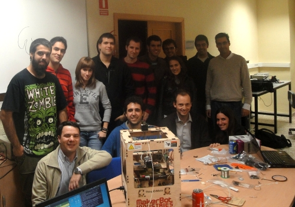

El pasado viernes 18 de Noviembre estuvimos ayudando a montar la nueva
thing-o-matic que han comprado los profesores
Miguel Hernando y
Diego Rodríguez Losada..
de la Escuela Universitaria de Ingeniería Técnica Industrial de la UPM. con ellos ya somos 3
las univesidades que formamos Plastic Valley.


El montaje se comenzó por la mañana, sobre las 9:30 y por la tarde, alrededor de las 17h ya estaba terminado, lista para empezar a hacer las primeras pruebas.

En esta foto se están realizando los últimos ajuste para terminarla.
Aquí está el enlace al álbum de fotos completo